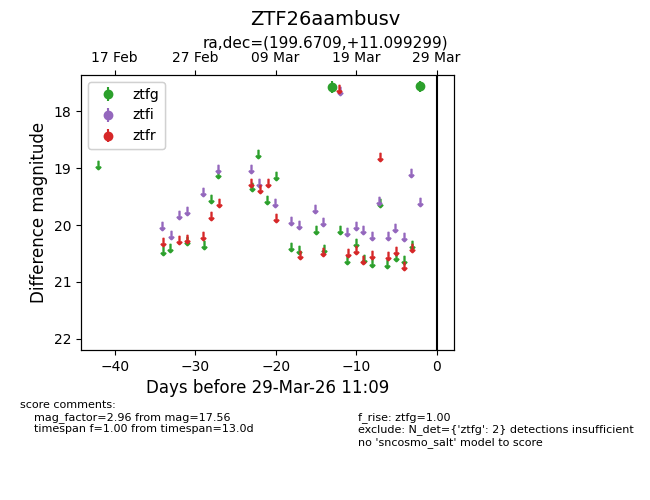
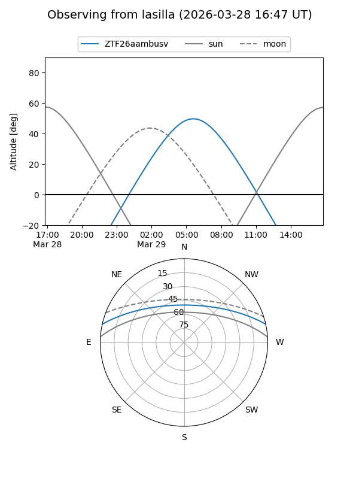
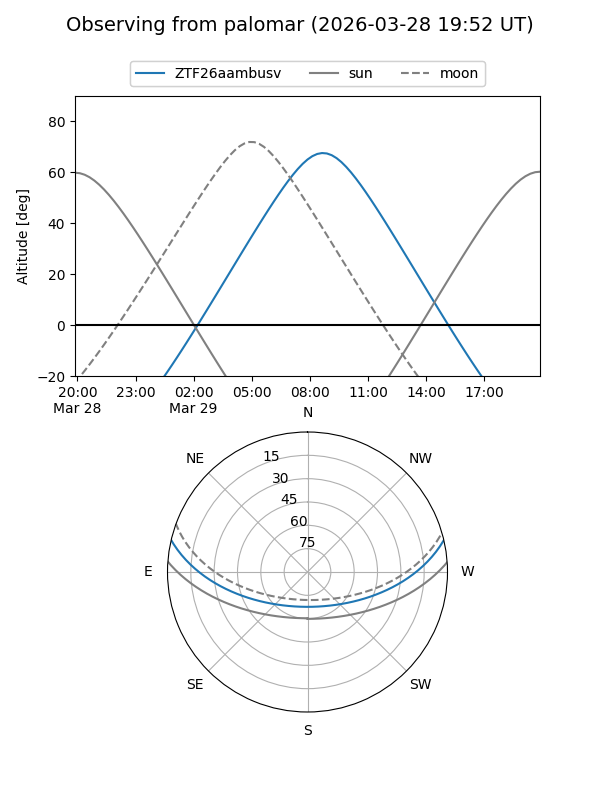

ZTF26aambusv
Target ZTF26aambusv at 2026-03-29 11:12
Aliases and brokers:
FINK: link
Lasair: link
ALeRCE: link
alt names
ZTF26aambusv (ztf,fink_ztf)
Coordinates:
equatorial (ra, dec) = 199.6709,+11.09930
equatorial (HMS+DMS) = 13:18:41.01,+11:05:57.48
galactic (l, b) = (326.0237,+72.73807)
Flags:
Photometry:
last ztfg=17.56
2 ztfg detections
Lightcurve

Visibility


Additional plots